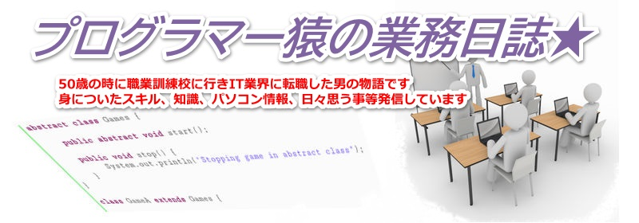
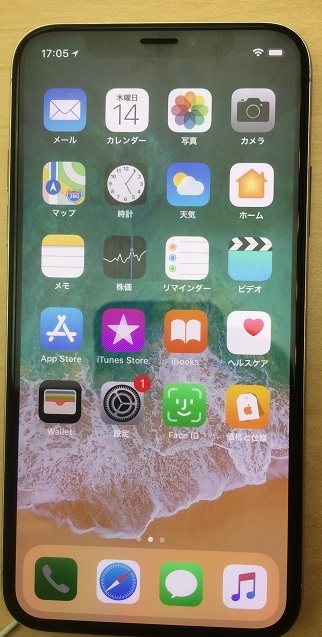
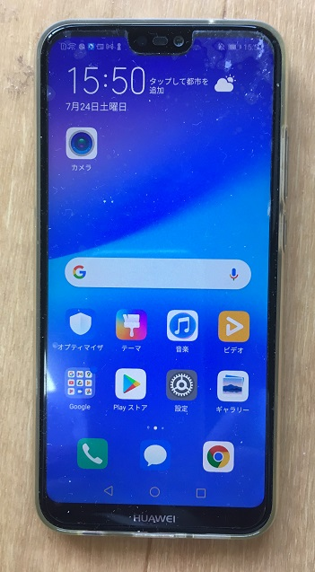

<!DOCTYPE html>
<html lang="ja"></html>
  <head>
    <meta charset="UTF-8">
    <meta name="viewport" content="width=device-width, initial-scale=1.0">
    <link href="css/style.css" rel="stylesheet" content="text/css" />
    <link href="https://fonts.googleapis.com/icon?family=Material+Icons" rel="stylesheet">
    <title>プログラマー猿の業務日誌</title>
    <script src="js/jquery-3.6.0.min.js"></script>
    <script src="js/main.js"></script>
    
  </head>
  <body>
<div id="wrap">
<!-- ヘッダー　ここから-->

<ul class="menu">
<li><a href ="index.html">ホーム</a></li>
<li><a href ="selintro.html">管理人自己紹介</a></li>
<li><a href ="jobchs.html">IT業界転職物語</a></li>
<li><a href ="pcop.html">パソコン歴・情報</a></li>
</ul>
<div class="photo2">

	<p class="text2">　　　　　Programming　Java C/C++ HTML/CSS python　Ruby　WebSite　PHP Perl　iPhone Android Swift iOS WordPress Github </p>
</div>
<!-- ヘッダー　ここまで-->

<!-- メイン　ここから-->


<div class="section s_01">

    <div class="accordion_one">
      <div class="accordion_header stay">序章（管理人自己紹介）<div class="i_box"><i class="one_i"></i></div></div>
      <div class="accordion_inner stay">
        <div class="box_one">
          <!-- <p class="txt_a_ac">アコーディオンの中身です。一つ開けると他は閉じます。</p> -->

          <p></p>
            <hr>
            <h4><span class="material-icons">&#xe7f1;</span> 生まれは大阪府寝屋川市</h4>
            <hr>
            <p>大阪府寝屋川市で生まれ小学6年の時に現在在住の枚方市に
              引越して来て今に至っています。
              
              小中学生の時は野球少年でしたが、高校1年の時に将棋に凝りだし
              将棋専門棋士養成機関である奨励会に入会するも年齢制限（20歳までに初段）
              がクリア出来ず退会。
              
              以後奨励会に入会時に全日制の工業高校を2年で中退したので
              定時制高校に編入してそのまま卒業する。
              
              社会に出てからは、20台の頃は主にルートセールスや配送等外回りの仕事が
              多かったのですが、30台になって工場内勤がほとんどになりました。
              50歳の時に職業訓練校に行ったことがIT業界に転職するきっかけとなりました。
              <br>
              <div class="lik">
                <a href="selintro.html"><span class="material-icons">
                  double_arrow
                  </span>続きはこちら</a>
              </div>
              </p>
        </div>
      </div>
    </div>
    
    <div class="accordion_one">
      <div class="accordion_header">第一章（IT業界転職物語）<div class="i_box"><i class="one_i"></i></div></div>
      <div class="accordion_inner">
        <div class="box_one">
          <!-- <p class="txt_a_ac">アコーディオンの中身です。</p> -->

          <p></p>
            <hr>
            <h4><span class="material-icons">&#xea09;</span> 50歳の時にIT業界へ転職</h4>
            <hr>
            <p> 私は50歳の時にそれまで務めていた工場勤務を辞めました。 
              何年務めても契約社員で給料は上がらず退職金等も当然ありませんでしたので このまま定年退職まで
              工場勤務で終わってしまうのもどうかなと思ったのです。 初めは3年前位から取り組んでいたサイト
              アフリエイトで生計を立てれないかと 退職後約2ヵ月あれやこれやと毎日頑張ったのですが、
              私の力量では小遣い銭稼 ぎくらいにしかならず物を売るのは苦手という性分も考えて自分には無理と
              判断 しアフリエイトも止めることにしました。 そうすると生活がありますのでまた仕事を探さなけ
              ればなりません。職安に 行こうかと思いましたが、少し前に「絶対に挫折しないiPhoneアプリ開発」
               という書籍を購入していたので、これをやり切ってから職安に行くことにしました。 
               
               
               <div class="lik">
                <a href="jobchs.html"><span class="material-icons">
                  double_arrow
                  </span> 続きはこちら</a>
               </div>
            </p>
        </div>
      </div>
    </div>
    
    <div class="accordion_one">
      <div class="accordion_header">第二章(私のパソコン歴)<div class="i_box"><i class="one_i"></i></div></div>
      <div class="accordion_inner">
        <div class="box_one">
          <!-- <p class="txt_a_ac">アコーディオンの中身です</p> -->
          
          <p></p>
            <hr>
            <h4><span class="material-icons">&#xe31e;</span> 私のパソコン歴</h4>
            <hr>
            <p>初めてパソコンを購入したのは、1999年大阪日本橋の上新電器で ピューレットパッカードに
              買収されたコンパック社の プレザリオだった。当時デスクトップパソコンでも20万円前後位 
              してたかと思う。その中にあって私が購入したプレザリオは、 13万ちょっとで当時としては
              格安だった。 パソコン初心者をターゲットにした商品だったらしいが、 以外に当時は、
              中上級者にも人気があり品薄の店が多かった様に思う。 私が購入した店でも在庫はなく展示品を
              売ってもらったのだ 展示品ということで定価よりいくらか値引きしてくれるだろうと 期待したが、
              3000円位だったので少しがっかりしたのを今でも 覚えている。 ただこのプレザリオは、
              余り使わなかった。使えなかったと 行った方が正しいと思う。
              <div class="lik">
                <a href="pcop.html"><span class="material-icons">
                  double_arrow
                  </span>続きはこちら</a>
              </div>
             </p>
        </div>
      </div>
    </div>
    <br>
  </div>


  <div class="section s_02">
    <div class="accordion_area">
      <div class="accordion_one">
        <div class="accordion_header stay">
          <div class="header_inner"><span class="material-icons">
            stay_primary_landscape
            </span> iPhone<div class="i_box"><i class="one_i"></i></div>
          </div>
        </div>
        <div class="accordion_inner stay">
          <div class="box_one">
            <p class="txt_a_ac">
              <hr>
              <h4><span class="material-icons">
                stay_primary_landscape
                </span> iPhoneメニュー</h4>
               <hr>
                <a href="">●私のiPhone歴</a><br>
                <a href="">●私の気に入った使用方法</a><br>
                <a href="">●iPhoneとandroidどっちがいい</a><br>
                <a href="">●基本的な使い方</a><br>
                <a href="">●キャプチャの取り方</a><br>
                <a href="">●画面録画方法</a><br>
                <a href="">●Bluetoothキーボードを接続使用</a><br>
                <a href="">●iCloudと連携して使用</a><br>
                <a href="">●Macosと連携して使用する</a><br>
            </p>
          </div>
        </div>
      </div>
      <div class="accordion_one">
        <div class="accordion_header">
          <div class="header_inner"><span class="material-icons">
            android
            </span> Android<div class="i_box"><i class="one_i"></i></div>
          </div>
        </div>
        <div class="accordion_inner">
          <div class="box_one">
            <p class="txt_a_ac">
              <hr>
              <h4><span class="material-icons">
                android
                </span> Androidメニュー</h4>
              <hr>
               <a href="">●私のAndroid歴</a><br>
               <a href="">●私の気に入った使用方法</a><br>
               <a href="">●iPhoneとandroidどっちがいい</a><br>
               <a href="">●基本的な使い方</a><br>
               <a href="">●キャプチャの取り方</a><br>
               <a href="">●画面録画方法</a><br>
               <a href="">●Bluetoothキーボードを接続使用</a><br>
               <a href="">●Googleと連携して使用</a><br>
               <a href="">●Windowsと連携して使用する</a><br>
            </p>
          </div>
        </div>
      </div>
      <div class="accordion_one">
        <div class="accordion_header">
          <div class="header_inner"><span class="material-icons">
            computer
            </span> Linux<div class="i_box"><i class="one_i"></i></div>
          </div>
        </div>
        <div class="accordion_inner">
          <div class="box_one">
            <p class="txt_a_ac">
              <hr>
              <h4><span class="material-icons">
                computer
                </span> Linuxメニュー</h4>
              <hr>
               <a href="">●私のLinux歴</a><br>
               <a href="">●私の気に入った使用方法</a><br>
               <a href="">●WindowsとLinuxどっちがいい</a><br>
               <a href="">●基本的な使い方コマンド</a><br>
               <a href="">●Linuxの楽しさ</a><br>
               <a href="">●CentOS Streaem</a><br>
               <a href="">●RedHat</a><br>
               <a href="">●LibreOffice</a><br>
               <a href="">●Ubuntu</a><br>
            </p>
          </div>
        </div>
      </div>
    </div>
  </div>
  
<!-- メイン　ここまで-->


<!-- フッター　ここから-->
<address>
Copyright Corporation. All rights reserved.
</address>

<!-- ここまで　ここまで-->
  </div>
  </body>
</html>